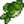
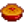

Cucina
La Cucina è una meccanica di gioco che diventa disponibile dopo aver migliorato la Casa della fattoria per la prima volta. La casa migliorata aggiunge una cucina, che include un fornello e un frigorifero. Il fornello è l'interfaccia della cucina, mentre il frigorifero fornisce 36 slots di stoccaggio, come il baule. Il frigorifero è unico ed è direttamente collegato con l'interfaccia della cucina, come se fosse un estensione dell'inventario del giocatore. Solo gli ingredienti nell'inventario del giocatore, del frigorifero o del Mini-Frigo sono usati per una ricetta.
In alternativa, dopo aver raggiunto il livello 9 di Raccolta selvatica, il giocatore può utilizzare un Kit culinario per cucinare ovunque.
Il giocatore deve imparare ogni ricetta prima che sia sbloccata in cucina. Le ricette bloccate sono visualizzate come una sagoma nera dell'icona della ricetta, con un messaggio nella descrizione che dice "???." Le icone delle ricette sbloccate appariranno in grigio se manca uno degli ingredienti, ma il suggerimento fornirà informazioni sulla ricetta. Eventuali ingredienti mancanti verranno evidenziati in rosso. Se tutti gli ingredienti richiesti per una ricetta sono presenti nell'inventario del giocatore o nel frigorifero (o in una combinazione dei due), l'icona della ricetta verrà completamente evidenziata.
Buff
Può essere attivo un buff da cibo alla volta, quindi mangiare un cibo che altera le statistiche eliminerà tutti i buff attivi e li sostituirà con quelli del cibo appena mangiato. Se un cibo appena mangiato non ha buff, tutti i buff esistenti rimarranno in vigore. I buff delle bevande (Espresso triplo, Caffè, Tè verde o Ginger ale) vengono gestiti separatamente, perciò possono essere accumulati con i buff di un cibo.
La durata del buff varia per ogni cibo e bevanda (vedi tabella sotto)[1], ma è la stessa per tutti gli effetti del buff di un determinato cibo o bevanda, eccetto Ravioli al nero di seppia. L'uso del Condimento Qi aumenta la durata del 50%.
Obiettivi
Ci sono tre Obiettivi associati alla Cucina:
- Cuoco (Cucina 10 differenti ricette)
- Sous Chef (Cucina 25 differenti ricette)
- Chef gourmet (Cucina ogni ricetta)
Condimento Qi
Il Condimento Qi, dieci dei quali possono essere acquistati alla Stanza delle noci di Mr. Qi per  10, rende il cibo cucinato di qualità Oro, aumentandone i valori di salute ed energia ripristinati dell'80% e il suo prezzo di vendita del 50%. Aumenterà anche i buff dati (esclusi quelli di Velocità) di un livello. Ad esempio, Budino di schiuma di mare darebbe +5 alla pesca invece di +4 se cucinato con il condimento Qi. Verrà usato automaticamente se è nell'inventario, nel frigorifero o in un Mini-Frigo durante la cottura. L'esaurimento del condimento Qi comporterà un messaggio che dice: "Hai usato tutto il tuo Condimento Qi".
10, rende il cibo cucinato di qualità Oro, aumentandone i valori di salute ed energia ripristinati dell'80% e il suo prezzo di vendita del 50%. Aumenterà anche i buff dati (esclusi quelli di Velocità) di un livello. Ad esempio, Budino di schiuma di mare darebbe +5 alla pesca invece di +4 se cucinato con il condimento Qi. Verrà usato automaticamente se è nell'inventario, nel frigorifero o in un Mini-Frigo durante la cottura. L'esaurimento del condimento Qi comporterà un messaggio che dice: "Hai usato tutto il tuo Condimento Qi".
Ricette
| Immagine | Nome | Descrizione | Ingredienti | Energia / Salute | Buff | Durata di buff | Fonti di ricetta | Prezzo di vendita | |||
|---|---|---|---|---|---|---|---|---|---|---|---|
| Uovo fritto | All'occhio di bue. | N/A | N/A | Casa della fattoria Migliorata | |||||||
| Omelette | Super soffice. | N/A | N/A |
|
|||||||
| Insalata | Un sana insalata da giardino. | N/A | N/A |
|
|||||||
| Cavolfiori al formaggio | Che profumino! | N/A | N/A |
|
|||||||
| Pesce al forno | Pesce al forno su un letto di erbe. | N/A | N/A |
|
|||||||
| Zuppa di pastinache | Fresca ed energetica. | N/A | N/A |
|
|||||||
| Misto di verdure | Molto nutriente. | N/A | N/A |
|
|||||||
| Colazione completa | Ti prepara ad affrontare il mondo! |
|
|||||||||
| Calamari fritti | Da masticare a lungo. | N/A | N/A |
|
|||||||
| Strana focaccia | Che c'è dentro? | N/A | N/A |
|
|||||||
| Pranzo fortunato | Un piccolo pasto speciale. |
|
|||||||||
| Funghi fritti | Terrigni ed aromatici. |
|
|||||||||
| Pizza | Popolare per tutte le ragioni giuste. | N/A | N/A |
|
|||||||
| Spezzatino di fagioli | Senza dubbio salutare. |
|
|||||||||
| Patate dolci glassate | Dolci ed appaganti... Lo zucchero dona un che di caramello. | N/A | N/A |
|
|||||||
| Carpa a sorpresa | Unta e blanda. | N/A | N/A |
|
|||||||
| Hashbrowns | Croccanti e dalla doratura scura! |
|
|||||||||
| Frittelle | Una coppia di frittelle soffici e vaporose. |
|
|||||||||
| Cena di salmone | Lo spritz al limone la rende speciale. | N/A | N/A |
|
|||||||
| Taco di pesce | Ha un odore delizioso. |
|
|||||||||
| Boccalone croccante | Wow, l'impanatura è perfetta. |  Boccalone (1) |
|
||||||||
| Stapparoncini | Peperoncini impanati ripieni di formaggio. |
|
|||||||||
| Tom Kha Gai | Che sapori incredibili! |
|
|||||||||
| Pane | Una crostosa baguette. | N/A | N/A |
|
|||||||
| Zuppa di trota | Piuttosto salata. |
|
|||||||||
| Torta al cioccolato | Ricca e succulenta, con una spessa glassa al caramello. | N/A | N/A |
|
|||||||
| Torta rosa | Ha delle caramelline a forma di cuore in cima. | N/A | N/A |
|
|||||||
| Crostata di rabarbaro | Mmm, dolce e piccantina! | N/A | N/A |
|
|||||||
| Biscotto | Dà molto da masticare. | N/A | N/A |
|
|||||||
| Spaghetti | Un classico. | N/A | N/A |
|
|||||||
| Anguilla fritta | Grassa ma gustosa. |
|
|||||||||
| Anguilla speziata | Parecchio piccante! Attenzione. |
|
|||||||||
| Sashimi | Pesce crudo tagliato a fettine. | N/A | N/A |
|
|||||||
| Rotolo di maki | Riso e pesce avvolti in un'alga. | N/A | N/A |
|
|||||||
| Tortilla | Da mangiare da sola, o come contenitore per altro cibo. | N/A | N/A |
|
|||||||
| Piatto rosso | Ricco di antiossidanti. |
|
|||||||||
| Parmigiana | Piccantina, formaggiosa, magnifica. |
|
|||||||||
| Budino di riso | Dolce, cremoso, e divertente da mangiare. | N/A | N/A |
|
|||||||
| Gelato | Difficile trovare qualcuno a cui non piaccia. | N/A | N/A |
|
|||||||
| Crostatina ai mirtilli | Leggera e rinfrescante. | N/A | N/A |
|
|||||||
| Bottino d'autunno | Un assaggio della stagione. |
|
|||||||||
| Zuppa di zucca | Un classico di stagione. |
|
|||||||||
| Superpasto | Un piatto veramente energizzante. |
|
|||||||||
| Marmellata di mirtilli rossi | Un dolce delle feste. |
|
|||||||||
| Ripieno | Ahh... l'odore di pane caldo e salvia. |
|
|||||||||
| Pranzo del fattore | Ti darà una bella spinta. | ||||||||||
| Panino 'Sopravvivi' | Un comodo spuntino per gli esploratori. | ||||||||||
| Pasto-dal-mare | Ti riscalderà nella fredda aria marina. | ||||||||||
| Gioia del minatore | Dovrebbe tenerti su di energie. | ||||||||||
| Piatto 'radicale' | Ti darà la voglia di dissotterrarne ancora. | ||||||||||
| Espresso triplo | È più potente del caffè normale! | ||||||||||
| Budino di schiuma di mare | Questo budino salato ti farà davvero entrare nella mentalità marittima! | ||||||||||
| Zuppa di alghette | È un tantino viscida. | N/A | N/A |
|
|||||||
| Brodo pallido | Un brodo delicato con una punta di zolfo. | N/A | N/A |
|
|||||||
| Budino di prugne | Un dolce tradizionale delle vacanze. | N/A | N/A |
|
|||||||
| Salsa di carciofi | Fresca e ristoratrice. | N/A | N/A |
|
|||||||
| Saltinpadella | Verdure alla julienne su un letto di riso. | N/A | N/A |
|
|||||||
| Nocciole arrostite | Il processo di arrostimento produce un intenso aroma silvestre. | N/A | N/A |
|
|||||||
| Crostata di zucca | Crema di zucca vellutata in una crosta a strati. | N/A | N/A |
|
|||||||
| Insalata di ravanelli | I ravanelli sono così croccanti! | N/A | N/A |
|
|||||||
| Macedonia | Una squisita combinazione di frutta estiva. | N/A | N/A |
|
|||||||
| Torta di more | Non c'è niente che gli assomigli. | N/A | N/A |
|
|||||||
| Canditura di mirtilli rossi | La canditura è abbastanza dolce da mascherare il frutto amaro. | N/A | N/A |
|
|||||||
| Bruschetta | Pomodori arrosto su pane bianco croccante. | N/A | N/A |
|
|||||||
| Insalata russa | Fresca, leggera e molto salutare. | N/A | N/A |
|
|||||||
| Risotto di felci | Un piatto di riso cremoso servito con germogli di felce saltati. È un tantino scialbo. | N/A | N/A |
|
|||||||
| Muffin ai semi di papavero | Ha un effetto calmante. | N/A | N/A |
|
|||||||
| Zuppa di pesce | Il modo perfetto per scaldarti dopo una fredda notte in mare. |
|
|||||||||
| Stufato di pesce | Odora parecchio di mare. Il sapore è migliore, però. |
|
|||||||||
| Escargot | Lumache imburrate cucinare alla perfezione. |
|
|||||||||
| Zuppa d'aragosta | Questa zuppa delicata è una ricetta segreta della famiglia di Willy. |
|
|||||||||
| Barretta d'acero | Una ciambellina dolce coperta di gustosa glassa d'acero. |
|
|||||||||
| Tortini di granchio | Granchio, briciole di pane e uova, modellati a pasticcini e fritti marron-dorati. |
|
|||||||||
| Cocktail di gamberetti | Un sontuoso antipasto preparato con gamberetti appena pescati. |
|
|||||||||
| Ginger ale | Una bevanda piccantina, e un toccasana per gli stomaci irritati. | Negozio del Nano nel Vulcano o Isola Zenzero ( |
|||||||||
| Budino di banana | Un dessert cremoso dal magnifico gusto tropicale. |
|
|||||||||
| Riso colloso al mango | Il dolce mango e la noce di cocco trasformano questo riso in un piatto davvero speciale. |
|
|||||||||
| Poi | Un cibo tradizionale con un gusto dolce e delicato se mangiato fresco. | N/A | N/A |
|
|||||||
| Curry tropicale | Un curry esotico e fragrante servito in una ciotola di ananas. | ||||||||||
| Ravioli al nero di seppia | Proteggono temporaneamente dagli status negativi. | al nero di seppia) |
Ingredienti
Per cucinare tutti gli 80 piatti del gioco sono necessari almeno 87 diversi tipi di oggetti, tra cui:
- 26 colture
- 13 raccolti selvatici
- 4 frutti degli alberi
- 2 prodotti animali
- 4 beni artigianali
- 2 oggetti vari (sciroppo d'acero e nero di seppia)
- 17 oggetti ottenuti con la pesca
- 8 oggetti e pesci ottenuti con la Nassa per granchi
- 5 oggetti acquistabili all'Emporio di Pierre
- 6 piatti cucinati usati come ingredienti
Queste tabelle presuppongono che utilizzerai il primo piatto artigianale per creare un altro piatto artigianale. Per esempio, userai 1 Patata per fare le Hashbrowns e quelle stesse Hashbrown per fare la Colazione completa. Avrai bisogno di 1 altra patata per fare le Hashbrown per il Pasto-dal-mare. Quando avrai cucinato tutti i piatti almeno una volta, otterrai l'obiettivo Chef Gourmet ma non finirai con nessuna Hashbrown perché verranno tutte usate per preparare gli altri piatti.
Colture
| Immagine | Nome | Quantità necessaria | Stagione | Tempo di crescita | Note | Necessaria per |
|---|---|---|---|---|---|---|
| Pastinaca | 2 | Primavera | 4 Giorni | |||
| Cavolo verde | 2 | Primavera | 6 Giorni | Raccogliere con la Falce | ||
| Patata | 2 | Primavera | 6 Giorni | Ha una probabilità del 20% di produrre patate extra | ||
| Jazz blu | 1 | Primavera | 7 Giorni | |||
| Fagiolo verde | 2 | Primavera | 10 Giorni | Cresce su un graticcio. Continua a produrre ogni 3 giorni | ||
| Cavolfiore | 1 | Primavera | 12 Giorni | Può diventare una Coltura gigante | ||
| Rabarbaro | 1 | Primavera | 13 Giorni | Semi disponibili nell'Oasi |  Crostata di rabarbaro (1) | |
| Aglio | 2 | Primavera | 4 Giorni | Disponibile dall'anno 2 | ||
| Peperoncino | 3 | Estate | 5 Giorni | Continua a produrre ogni 3 giorni | ||
| Ravanello | 2 | Estate | 6 Giorni | |||
| Papavero | 1 | Estate | 7 Giorni | |||
| Pomodoro | 8 | Estate | 11 Giorni | Continua a produrre ogni 4 giorni | ||
| Melone | 2 | Estate | 12 Giorni | Può diventare una Coltura gigante | ||
| Mirtillo | 2 | Estate | 13 Giorni | Produce mirtilli multipli ad ogni raccolto. Continua a produrre ogni 4 giorni | ||
| Mais | 2 | Estate/Autunno | 14 Giorni | Continua a produrre ogni 4 giorni | ||
| Cavolo rosso | 3 | Estate | 9 Giorni | Disponibile dall'anno 2 | ||
| Bok Choy | 1 | Autunno | 4 Giorni | |||
| Melanzana | 2 | Autunno | 5 Giorni | Continua a produrre ogni 5 giorni | ||
| Amaranto | 1 | Autunno | 7 Giorni | Raccogliere con la Falce | ||
| Mirtilli rossi | 4 | Autunno | 7 Giorni | Produce 2 Mirtillo rossi a raccolto. Continua a produrre ogni 5 giorni | ||
| Patata dolce | 2 | Autunno | 10 Giorni | |||
| Zucca | 3 | Autunno | 13 Giorni | Può diventare una Coltura gigante | ||
| Barbabietola | 1 | Autunno | 6 Giorni | Semi disponibili nell'Oasi | ||
| Carciofo | 2 | Autunno | 8 Giorni | Disponibile dall'anno 2 | ||
| Ananas | 1 | Estate | 14 Giorni | |||
| Radice di taro | 4 | Estate | 10 Giorni |
Raccolti selvatici
Frutti degli alberi
| Immagine | Nome | Quantità necessaria | Fonte | Stagione | Necessaria per |
|---|---|---|---|---|---|
| Mela | 1 | Melo | Autunno | ||
| Albicocca | 1 | Albicocco | Primavera | ||
| Banana | 1 | Banano | Estate | ||
| Mango | 1 | Albero di mango | Estate |
Prodotti animali
Nota: Tutte le ricette che richiedono latte accetteranno sia Latte sia Latte Grande e anche Latte di capra e Latte di capra grande.
Per quanto riguarda le uova, sono permesse sia quelle di gallina sia quelle di anatra, incluse le Uovo del Vuoto.
| Immagine | Nome | Quantità necessaria | Fonte | Note | Necessaria per |
|---|---|---|---|---|---|
| Uovo | 8 | Galline |
|||
| Latte | 12 |  Mucche |
Ottenuto con il Secchio per latte |
Beni artigianali
| Immagine | Nome | Quantità richiesta | Fonte | Ingredienti | Tempo di produzione | Necessario per |
|---|---|---|---|---|---|---|
| Formaggio | 3 | Pressa per formaggi | 3.3 ore | |||
| Maionese | 2 | Macchina per la maionese | 3 ore | |||
| Maionese del Vuoto | 1 | Macchina per la maionese | 3 ore | |||
| Caffè | 3 | Barilotto | 2 ore |
Oggetti vari
| Immagine | Nome | Quantità necessaria | Fonte | Tempo di produzione | Necessario per |
|---|---|---|---|---|---|
| Sciroppo d'acero | 1 | Estratto dall'Acero | 7-8 Giorni | ||
| Nero di seppia | 2 | Bottino Calamaragazzo, Laghetto per pesci contenente Calamaro o Calamaro di mezzanotte | Varia in base alla popolazione del Laghetto per pesci |
Pesci
Nassa per Granchi
Nota che Vongola e Cozza possono essere raccolte sulla Spiaggia in qualsiasi stagione. Il Granchio può essere ottenuto come bottino dal Granchio roccioso o dal Granchio lavico nelle Miniere.
| Immagine | Nome | Quantità necessaria | Luogo | Necessario per |
|---|---|---|---|---|
| Aragosta | 1 | Oceano | ||
| Vongola | 1 | Oceano | ||
| Gambero | 1 | Acqua dolce | ||
| Granchio | 1 | Oceano | ||
| Cozza | 1 | Oceano | ||
| Gamberetto | 2 | Oceano | ||
| Lumaca | 1 | Acqua dolce | ||
| Lumachina | 2 | Acqua dolce |
Oggetti Emporio
Possono essere comprati all'Emporio di Pierre.
Piatti usati come Ingredienti
Gli ingredienti per realizzare questi piatti sono inclusi nelle liste precedenti.
| Immagine | Nome | Quantità necessaria | Ingredienti | Necessario per |
|---|---|---|---|---|
| Uovo fritto | 1 | |||
| Hashbrowns | 2 | |||
| Frittelle | 1 | |||
| Tortilla | 2 | |||
| Pane | 3 | |||
| Omelette | 1 |
Ricette Redditizie
- Vedi anche: Quando trasformare il tuo pesce in Sashimi
Sebbene la maggior parte dei piatti vengano venduti a meno del costo o del profitto dei loro ingredienti, alcuni renderanno un ottimo profitto usando ingredienti di bassa qualità.
Nota: Potrebbe essere più vantaggioso lasciare il Pesce per le Missioni "Cercasi Aiuto" che generalmente pagano il pesce il triplo del suo valore di base, rispetto a trasformarlo in Sashimi.
Le seguenti ricette garantiranno un profitto utilizzando ingredienti di bassa qualità:
Comunque se il tuo obiettivo è il profitto allora dovrai sempre migliorare gli ingredienti, ad esempio con Barattolo per conserve, Barilotto, Macchina per la maionese o Pressa per formaggi. Le uniche eccezioni degne di nota sono Zuppa di alghette (+ 40o), Brodo pallido (+
40o), Brodo pallido (+ 100o), Piatto 'radicale' con radici invernali di qualità regolare (+
100o), Piatto 'radicale' con radici invernali di qualità regolare (+ 5o) e anche Sashimi per pesci di bassa qualità, dato che la cucina è l'unica modo per elaborare alghette, pesci, carote di grotta e radici invernali. A parte queste quattro ricette, cucinare a scopo di lucro diventa appetibile solo se la produzione degli ingredienti supera di molto la capacità di lavorazione.
5o) e anche Sashimi per pesci di bassa qualità, dato che la cucina è l'unica modo per elaborare alghette, pesci, carote di grotta e radici invernali. A parte queste quattro ricette, cucinare a scopo di lucro diventa appetibile solo se la produzione degli ingredienti supera di molto la capacità di lavorazione.
Missioni
L'equivalente di  100 000o di oggetti appena cucinati sono richiesti nella missione Qi e la gastronomia. Durante questa ricerca, la cucina creerà piatti con la parola "Fresco" nei loro nomi (ie, Uovo Fritto Fresco, Omelette Fresca, ecc.), che non possono accumularsi con alimenti cucinati prima dell'inizio della ricerca.
100 000o di oggetti appena cucinati sono richiesti nella missione Qi e la gastronomia. Durante questa ricerca, la cucina creerà piatti con la parola "Fresco" nei loro nomi (ie, Uovo Fritto Fresco, Omelette Fresca, ecc.), che non possono accumularsi con alimenti cucinati prima dell'inizio della ricerca.
Note
- Ogni ricetta ricerca gli ingredienti nelle seguenti posizioni, sempre nello stesso ordine dallo slot in basso a destra allo slot in alto a sinistra:
- prima nell'inventario del giocatore
- poi nel frigorifero principale
- infine nei Mini-Frigo
- Quando viene ordinato automaticamente con il pulsante Organizza, questo ordine prima in basso a destra consumerà automaticamente articoli di qualità inferiore dello stesso tipo. Tuttavia, per le ricette con sostituti, posizionare gli ingredienti come desiderato in basso a destra, per evitare di utilizzare ingredienti più pregiati in ricette meno pregiate o in ricette che accettano un'ampia varietà di ingredienti. Ad esempio, il Tonno (che è richiesto per Taco di pesce) è accettato in Sashimi che accetta qualsiasi tipo di pesce. Tuttavia, mettendo una Cozza nello slot in basso a destra, la cozza verrà raccolta per prima e salverà il tonno per la ricetta più esclusiva e preziosa.
- Durante la ricerca di più Mini-Frigo, il gioco parte dall'ultimo posizionato nell'esatto ordine cronologico in cui i frigoriferi sono stati posizionati per la prima volta, quindi funziona all'indietro. La posizione del frigorifero nella fattoria non ha importanza.
Errori
- Solo per dispositivi mobili: mangiare un cibo che dia un buff e quindi premere il pulsante "Passa al salvataggio precedente" riporterà i buff al salvataggio precedente. Questo può essere usato per mangiare cibo difficile da creare/trovare senza perderlo.
Riferimenti
- ↑ La durata dei buff di ogni cibo e bevanda appare in Content\Data\ObjectInformation.xnb all'ottavo indice. Il numero dato deve essere quindi moltiplicato per 700 per avere la durata in millisecondi. La formula è in Buff::Buff nel codice di gioco.
Storia
- Ad un certo punto tra la v1.11 e la v1.3, è stato rimosso un errore che faceva diminuire la durata dei buff con l'avanzare della giornata.
- 1.3.27: Salsa di carciofi, Crostata di zucca, Zuppa di pesce e Zuppa d'aragosta ora accettano Latte grande al posto del latte normale.
- 1.4: Aggiunti Cocktail di gamberetti, Budino di schiuma di mare, Espresso triplo. Risolto l'errore nel buff dello Spezzatino di fagioli. Scheda di cottura standardizzata con l'interfaccia dei fornelli in tutte le lingue. Aggiunto Mini-Frigo come opzione di stoccaggio degli ingredienti.
- 1.5: Aggiunti Budino di banana, Ginger ale, Riso colloso al mango, Poi, Curry tropicale, Ravioli al nero di seppia. Il Latte di capra e il Latte di capra grande possono ora essere usati nelle ricette.